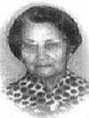

fiche familiale
*******************************************************************************
|  |
Marguerite Rivet Rivest décède à l'âge de 80 ans. Naissance le 1er mai 1894 à St-Alphonse-de-Rodriguez, cté Joliette Baptême le 3 mai 1894 à St-Alphonse-de-Rodriguez Baptisée Marie Yvonne Marguerite dite Midgée Parrain Euclide Lafond, marraine Évelina Rivest, son oncle et sa tante. Décès le 23 septembre 1974 au centre hospitalier de Rouyn-Noranda Funérailles: 26 sep 1974 à St-Isidore de Laverlochère Sépulture: au cimetière de Laverlochère Marraine d'Aurèle Lambert, de Laura et Paquerette Rivest. Père: Urgel Rivet Rivest Mère: Agnès Piquette Piquet (sa famille) |
Mariage le 6 juillet 1914 à St-Isidore de Laverlochère
 |
Époux: Albert Labelle décède à l'âge de 84 ans. Naissance le 31 décembre 1889 à Hull. Baptême le 8 janvier 1890 à Notre-Dame-de-Grâce de Hull Décès le 13 novembre 1974 au centre hospitalier de Rouyn-Noranda Funérailles: 16 nov 1974 à St-Isidore de Laverlochère Sépulture: au cimetière de Laverlochère Parrain d'Aurèle Lambert, de Laura et Paquerette Rivest. Père: Francis Labelle Mère: Séraphine Charron (sa famille) |
Enfant 1 Estelle-Marie-Desneiges Labelle
décède à l'âge de 4 mois.
Naissance: 7 jul 1915 à Cobalt, cté Timiskaming, ON
Baptême: 11 jul 1915 à Cobalt
Décès: 20 nov 1915 à Cobalt
-------------------------------------------------------------------------------
 
|
Enfant 2 Adèle Labelle décède à l'âge de 72 ans. Naissance: 28 octobre 1916 à Laverlochère Décès: 7 février 1989 à Évain Mariage le 14 août 1940 à St-Isidore de Laverlochère Conjoint: Émilien McFadden décède à l'âge de 74 ans. Naissance: 4 septembre 1916 à Lorrainville Décès: 28 mai 1991 à Évain Père: Hormidas McFadden Mère: Célina Dubois |
Conjoint: Creighton Eide
Enfant 2 Robert McFadden
Enfant 3 Rénald McFadden
Conjointe: Florence Guertin
Enfant 4 Florence McFadden
Enfant 5 Oril McFadden
décède à l'âge de 52 ans.
Conjointe: Ghislaine Jolivet
Enfant 6 Berthe McFadden
Enfant 7 Stella McFadden
décède à l'âge de 71 ans
Conjoint: Yvon Cossette
Enfant 8 Yvon McFadden
Enfant 9 Laurient McFadden
décède à l'âge de 27 ans
Conjointe: Lina Leblanc
-------------------------------------------------------------------------------
Enfant 3 Hermile Labelle
décède à l'âge de 69 ans.
Naissance: 14 juin 1918 à Laverlochère
Décès: 20 août 1987 à Spanish, cté Algoma, ON
-------------------------------------------------------------------------------
Enfant 4 Élide Labelle
Naissance: 28 fév 1920 à Laverlochère
Mariage le 14 mars 1940 à Kirkland Lake, cté Timiskaming ON
Conjoint: Gérard Corbeil
décède à l'âge de 66 ans.
Naissance: en 1915
Décès: 25 juin 1981 à Val-D'Or, cté Abitibi Est
Père: Isaïe Corbeil
Mère: Léocadie Routhier
Enfant 1 Clary Corbeil
Conjointe: Louiselle Boutin
Enfant 2 Joël Corbeil
Conjointe: Rita Daigle
Enfant 3 Michel Corbeil
Enfant 4 Daniel Corbeil
Enfant 5 Huguette Corbeil
Enfant 6 Rachel Corbeil
Conjoint: Charles Charland
Enfant 7 Caroline Corbeil
Enfant 8 Venise Corbeil
-------------------------------------------------------------------------------
 |
Enfant 5 Blanche Labelle décède à l'âge de 85 ans. Naissance: 12 jul 1921 à Laverlochère Décès: en 2006 à Timmins, ON Mariage le 26 novembre 1940 à St-Isidore de Laverlochère Conjoint: Émile Gareau décède à l'âge de 68 ans. Naissance: 8 décembre 1905 Décès: en 1973 à Timmins, ON Père: Adélard Gareau Mère: Délia Corbeil |
 
|
Enfant 6 Laurence Labelle décède à l'âge de 77 ans. Naissance: 7 décembre 1922 à Laverlochère Dite Laure Décès: 24 mars 2000 à Lebel-sur-Quévillon, cté Nouveau-Québec Funérailles: 27 mars 2000 à Ste-Famille de Lebel-sur-Quévillon Sépulture: au cimetière d'Amos Mariage le 30 juillet 1952 à St-Isidore de Laverlochère Conjoint: Donat Racicot décède à l'âge de 83 ans. Naissance: en 1921 Décès: 30 avril 2004 au centre hospitalier de Val D'Or Funérailles: 4 mai 2004 à Ste-Famille de Lebel-sur-Quévillon Sépulture: au cimetière d'Amos Père: Jean-Baptiste-Noël Racicot Mère: Angéline Provencher |
Conjoint: René Deschamps
Enfant 2 Jacques Racicot
Conjointe: Guylaine Gagnon
Enfant 3 Jacynthe Racicot
Conjoint: Denis Bergeron
-------------------------------------------------------------------------------

|
Enfant 7 Roger Labelle Naissance: 16 avril 1924 à Laverlochère Décès: avant 2018 Mariage le 7 août 1946 à St-Isidore de Laverlochère Conjointe: Lucille McFadden décède à l'âge de 77 ans. Naissance: 7 décembre 1925 Décès: 15 novembre 2003 à Spanish, ON Père: Joseph-Hilaire McFadden Mère: Marie-Rose Courchesne |
Enfant 2 Etienne Labelle
Enfant 3 Laurier Labelle
Enfant 4 Daniel Labelle
-------------------------------------------------------------------------------

|
Enfant 8 Henri Labelle décède à l'âge de 92 ans. Naissance: 3 décembre 1925 à Laverlochère Décès: 18 octobre 2018 à Val-D'Or Funérailles: 20 octobre 2018 à Val-D'Or Sépulture: au cimetière de Val-D'Or Mariage le 14 juillet 1951 à La Motte, cté Abitibi Conjointe: Pauline Trottier Père: Arthur Trottier Mère: Cédulie Dufour |
Conjoint: Guy Rochefort
Enfant 2 Marc Labelle
Conjointe: Judith Rosenthal
-------------------------------------------------------------------------------
Enfant 9 François Labelle
décède avant 2018.
Naissance: 10 octobre 1927 à Laverlochère
Dit Frank
-------------------------------------------------------------------------------
Enfant 10 Donatien Labelle
décède à l'âge de 66 ans.
Naissance: 6 juillet 1929 à Laverlochère
Décès: 28 novembre 1995 à Spanish, cté Algoma, ON
Mariage le 30 décembre 1965 à Spanish, cté Algoma, ON
Conjointe: Gisèle Turmel
Père: Venant Turmel
Mère: Cécile Ricard
-------------------------------------------------------------------------------

|
Enfant 11 Solange Labelle décède à l'âge de 82 ans. Naissance: 14 février 1931 à Laverlochère Décès: 2 mars 2013 à Timmins, ON sépulture: cimetière Commémoratif de Timmins Mariage le 22 juillet 1950 à St-Isidore de Laverlochère Conjoint: Hermas Pellerin décède à l'âge de 65 ans. Naissance: 30 août 1927 Décès: 13 novembre 1992 à Timmins, ON sépulture: cimetière Commémoratif de Timmins Père: Arthur Pellerin Mère: Rose-Marie Trépanier |
Enfant 12 Yvonnique Labelle
décède à l'âge de 63 ans.
Naissance: 18 septembre 1932 à Laverlochère
Dit Yvonie
Décès: 6 mai 1996 à Spanish, cté Algoma, ON
Conjointe: Gaile Solomon
-------------------------------------------------------------------------------